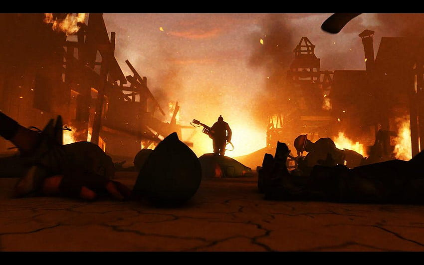
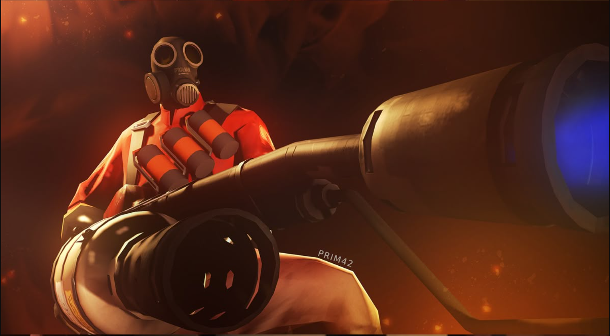
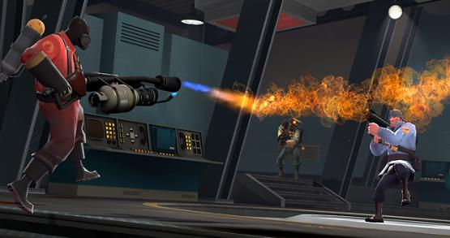
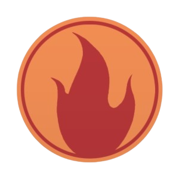

One Shudders to Imagine what inhuman thoughts lie behind that mask. What dreams of chronic and sustained cruelty...
The Pyro is the pyromaniac class of the 9 mercenaries, wielding a Flamethrower as its main source of its firepower, igniting enemies on fire, reflecting projectiles, and extinuishing teamates. Nothing is much known of the Pyro, only its burning passion for all things fire-related. Either way, he's a fearsome, inscrutable, on-fire Frankenstein of a man - if he even is a man.

damage-over-time effect caused by fire-based weapons that continues to burn enemies for a few seconds after they’re ignited. It slowly drains health and can be extinguished by water, health packs, Mad Milk, Jarate, the Manmelter, or a friendly Pyro's airblast.

